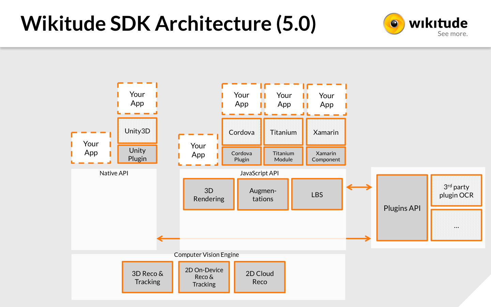

Getting started
Welcome to the Wikitude SDK. This document is designed to help you from your very first steps with the Wikitude SDK all the way through to advanced concepts and examples for developing your augmented reality project.
Recommended Usage of this Documentation
The documentation is arranged in a way to guide you through the various steps in your development process. We recommend following each of the steps outlined below and reading the documentation in the order displayed.
Setup your project
In this section we describe the necessary steps to setup a project in a detailed guide.
View the samples
All of the included samples are complete Android projects and apps. Browse through this section and get an idea of what the Wikitude SDK Native API is capable of. The relevant parts of the samples are described in more detail to highlight the applied concepts and patterns. These examples are designed to help you get off to a great start with the Wikitude SDK.
Viewing samples based on vision based augmented reality requires the corresponding reference images. All of them are available directly in the description of the sample or available as a collection on this page, which you can either view on the screen or print.
The Wikitude Native SDK - Augmented Reality for your own app
The Wikitude Native SDK is a software library and framework for mobile apps used to create augmented reality experiences.
As opposed to the Wikitude SDK which uses a JavaScript API the Wikitude Native SDK allows to create your AR experiences directly in Java and OpenGL.
Architecture of the Wikitude SDK

The image above shows the different components of the Wikitude SDK and possible approaches for creating augmented reality apps. Each of these approaches is based on a certain development environments (IDE) and platforms:
- Computer Vision Engine: The computer vision engine is a core component of the Wikitude SDK and used by all platforms. It is not directly accessible, but wrapped either by the Native API or the JavaScript API.
- Wikitude SDK - Native API: Provides access to the Wikitude computer vision engine natively for Android (Java) and iOS (ObjC). It also can load plugins via the Wikitude Plugins API. (NOTE: Wikitude SDK plugins have nothing to do with the Cordova or Unity Plugin concept.)
- Wikitude SDK - JavaScript API: Allows to build augmented reality worlds on basis of HTML and JavaScript. It is available for Android and iOS. The JavaScript API provides access to the functionality of the computer vision engine, location based AR, the Plugins API and dedicated rendering functionality.
- Wikitude SDK - Plugins API: An API to connect your own plugins to the Wikitude SDK.
- Wikitude SDK - Cordova Plugin: On top of the JavaScript API the Cordova plugin allows to use the Wikitude SDK in combination with Apache Cordova.
- Wikitude SDK - Titanium Module: On top of the JavaScript API the Titanium module allows to use the Wikitude SDK in combination with Titanium.
- Wikitude SDK - Unity Plugin: On top of the Native API the Unity plugin allows to use the Wikitude SDK in combination with Unity.
- Wikitude SDK - Xamarin Component: On top of the JavaScript API the Cordova plugin allows to use the Wikitude SDK in combination with Xamarin.
The Wikitude Developer Portal
The Wikitude Developer Section should be your first stop when you have specific development related questions. The portal hosts a very active Developer Community Forum where Wikitude staff members are constantly assisting other developers with helpful tips and advice. A Knowledge Base helps with various questions.
Feedback and Contact
We are always interested in your feedback and suggestions how we can improve this documentation. Please use the contact form on our website or visit us on Google+ or Facebook